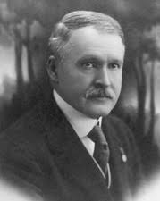

Selden Palmer Spencer(🇺🇸):셀던 파머 스펜서
[1862.9.16 ~ 1925. 5. 16일 ]
건국훈장 애족장 · 2015
Achievements공적
Early Political Career초기 정치 활동
- Entered U.S. politics in 1898.1898년 미국 정계에 진출하였습니다.
- Developed connections with the Korean Empire’s diplomatic mission, including An Yŏn and Rhee Syng-min.안연, 이승민 등 대한제국 외교 사절과 교분을 맺었습니다.
- Given the Korean name Lee Seung-ri (李勝里) and served as the Korean ambassador to the United States from 1905 to 1906.이승리(李勝里)라는 한국 이름을 받았으며, 1905년부터 1906년까지 주미 한국 대사를 지냈습니다.
- Advocacy for Korean Independence한국 독립 지지 활동
- Proposals to U.S. Congress (1919):미국 의회에 대한 제안(1919):
- As a Republican senator, twice introduced resolutions to the U.S. Congress in June and August 1919, urging support for Korean independence following the March 1st Movement.공화당 상원의원으로서 3·1운동 이후 1919년 6월과 8월 두 차례 미국 의회에 결의안을 제출하여 한국 독립에 대한 지지를 촉구하였습니다.
- Publicly criticized Japanese colonial rule and highlighted the need for Korean sovereignty.일제의 식민 통치를 공개적으로 비판하고 한국의 주권이 필요함을 강조하였습니다.
- Participated in a rally organized by the Korean Friendship Association in Philadelphia in May 1920, delivering a speech condemning Japan’s colonial policies and advocating for Korean independence.1920년 5월 필라델피아에서 한국친우회가 주최한 집회에 참석하여 일본의 식민 정책을 규탄하고 한국의 독립을 지지하는 연설을 하였습니다.
- In December 1921, created and distributed a booklet titled “Korea's Appeal to the Conference on Limitation of Armaments,” based on materials from the Korean Provisional Government delegation.1921년 12월, 대한민국 임시정부 대표단의 자료를 바탕으로 “Korea's Appeal to the Conference on Limitation of Armaments”라는 소책자를 만들어 배포하였습니다.
- Successfully included the appeal for Korean independence in the U.S. Congressional Record in February 1922, raising awareness of Korea’s plight among U.S. lawmakers.1922년 2월 한국 독립 청원을 미국 의회 의사록에 수록하는 데 성공하여, 미국 의원들에게 한국의 처지를 널리 알렸습니다.
- Passed away on May 16, 1925, in Washington, D.C.1925년 5월 16일 워싱턴 D.C.에서 별세하였습니다.
- Honored posthumously in 2015 by the South Korean government with the Order of the National Defense Medal for his support of Korean independence.2015년 대한민국 정부는 한국 독립을 지원한 공로로 그에게 국방훈장을 추서하였습니다.
Public Support for Korea (1920):한국에 대한 공개적 지지(1920):
Promotion of Korean Issues at the Washington Conference (1921-1922)워싱턴 회의에서의 한국 문제 제기(1921-1922)
Death and Legacy서거와 유산